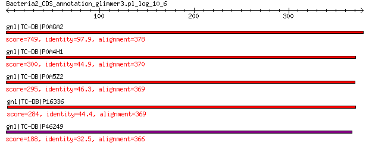

bitscore colors: <40, 40-50 , 50-80, 80-200, >200
 BLASTP 2.2.31+
Reference: Stephen F. Altschul, Thomas L. Madden, Alejandro A.
Schaffer, Jinghui Zhang, Zheng Zhang, Webb Miller, and David J.
Lipman (1997), "Gapped BLAST and PSI-BLAST: a new generation of
protein database search programs", Nucleic Acids Res. 25:3389-3402.
Reference for composition-based statistics: Alejandro A. Schaffer,
L. Aravind, Thomas L. Madden, Sergei Shavirin, John L. Spouge, Yuri
I. Wolf, Eugene V. Koonin, and Stephen F. Altschul (2001),
"Improving the accuracy of PSI-BLAST protein database searches with
composition-based statistics and other refinements", Nucleic Acids
Res. 29:2994-3005.
Database: tcdb.fas
6,097 sequences; 2,831,344 total letters
Query= Bacteria2_CDS_annotation_glimmer3.pl_log_10_6
Length=378
Score E
Sequences producing significant alignments: (Bits) Value
gnl|TC-DB|P0AGA2 3.A.5.1.1 Preprotein translocase subunit secY ... 749 0.0
gnl|TC-DB|P0A4H1 3.A.5.4.1 Preprotein translocase subunit secY ... 300 6e-98
gnl|TC-DB|P0A5Z2 3.A.5.2.2 Preprotein translocase subunit secY ... 295 4e-96
gnl|TC-DB|P16336 3.A.5.2.1 PREPROTEIN TRANSLOCASE SECY SUBUNIT ... 284 7e-92
gnl|TC-DB|P46249 3.A.5.5.1 PREPROTEIN TRANSLOCASE SECY SUBUNIT ... 188 2e-55
> gnl|TC-DB|P0AGA2 3.A.5.1.1 Preprotein translocase subunit secY
- Escherichia coli.
Length=443
Score = 749 bits (1935), Expect = 0.0, Method: Compositional matrix adjust.
Identities = 370/378 (98%), Positives = 375/378 (99%), Gaps = 0/378 (0%)
Query 1 MFSGGALSRASIFALGIMPYISASIIIQLLTVVHPTLAEIKKEGEAGRRKISQYTRYGTL 60
MFSGGALSRASIFALGIMPYISASIIIQLLTVVHPTLAEIKKEGE+GRRKISQYTRYGTL
Sbjct 66 MFSGGALSRASIFALGIMPYISASIIIQLLTVVHPTLAEIKKEGESGRRKISQYTRYGTL 125
Query 61 VLAIFQSIGIATGLPNMPGMQGLVINPGFAFYFTAVVSLVTGTMFLMWLGEQITERGIGN 120
VLAIFQSIGIATGLPNMPGMQGLVINPGFAFYFTAVVSLVTGTMFLMWLGEQITERGIGN
Sbjct 126 VLAIFQSIGIATGLPNMPGMQGLVINPGFAFYFTAVVSLVTGTMFLMWLGEQITERGIGN 185
Query 121 GISIIIFAGIVAGLPPAIGHTIEQARQGDLHFLLLLLVAVLVFAVTFFVVFMERGQRRIV 180
GISIIIFAGIVAGLPPAI HTIEQARQGDLHFL+LLLVAVLVFAVTFFVVF+ERGQRRIV
Sbjct 186 GISIIIFAGIVAGLPPAIAHTIEQARQGDLHFLVLLLVAVLVFAVTFFVVFVERGQRRIV 245
Query 181 VNYAKRQQGRRVYAAQSTHLPLKVNMAGVIPAIFASSIILFPGTIASWFGGGTGWNWLTT 240
VNYAKRQQGRRVYAAQSTHLPLKVNMAGVIPAIFASSIILFP TIASWFGGGTGWNWLTT
Sbjct 246 VNYAKRQQGRRVYAAQSTHLPLKVNMAGVIPAIFASSIILFPATIASWFGGGTGWNWLTT 305
Query 241 ISMYLQPGQPLYVLLYASAIIFFCFFYTALVFNPRETADNLKKSGAFVPGIRPGEQTAKY 300
IS+YLQPGQPLYVLLYASAIIFFCFFYTALVFNPRETADNLKKSGAFVPGIRPGEQTAKY
Sbjct 306 ISLYLQPGQPLYVLLYASAIIFFCFFYTALVFNPRETADNLKKSGAFVPGIRPGEQTAKY 365
Query 301 IDKVMTRLTLVGAMYITFICLIPEFMRDAMKVPFYFGGTSLLIVVVVIMDFMAQVQTLMM 360
IDKVMTRLTLVGA+YITFICLIPEFMRDAMKVPFYFGGTSLLIVVVVIMDFMAQVQTLMM
Sbjct 366 IDKVMTRLTLVGALYITFICLIPEFMRDAMKVPFYFGGTSLLIVVVVIMDFMAQVQTLMM 425
Query 361 SSQYESALKKANLKGYNR 378
SSQYESALKKANLKGY R
Sbjct 426 SSQYESALKKANLKGYGR 443
> gnl|TC-DB|P0A4H1 3.A.5.4.1 Preprotein translocase subunit secY
- Synechococcus sp. (strain ATCC 27144 / PCC 6301 / SAUG 1402/1)
(Anacystis nidulans).
Length=439
Score = 300 bits (768), Expect = 6e-98, Method: Compositional matrix adjust.
Identities = 166/377 (44%), Positives = 247/377 (66%), Gaps = 17/377 (5%)
Query 1 MFSGGALSRASIFALGIMPYISASIIIQLLTVVHPTLAEIKK-EGEAGRRKISQYTRYGT 59
+FSGG LS +FALGI+PYI+ASII+QLLT P L +++K EGEAGRRKI+Q TRY +
Sbjct 73 IFSGGGLSALGVFALGILPYINASIILQLLTAAVPALEDLQKNEGEAGRRKIAQLTRYVS 132
Query 60 LVLAIFQSIGIATGLPNMPGMQGLVINPGFAFYFTAVVSLVTGTMFLMWLGEQITERGIG 119
L A+ QSI IA + + PG F ++LV G+MF+MW+ E ITERGIG
Sbjct 133 LGWALLQSIVIAVWVTRY------AVTPGPLFTIQTALALVAGSMFVMWISELITERGIG 186
Query 120 NGISIIIFAGIVAGLPPAIGHTIEQARQGDLHFLLLLLVAVLVFAVTFF-VVFMERGQRR 178
NG S++IF IVA LP ++ T+E A+ GD + +++ ++VF T +VF++ G RR
Sbjct 187 NGASLLIFLNIVATLPRSLQQTLELAQSGDRSTVGGIVILLIVFLATIVGIVFVQEGTRR 246
Query 179 IVVNYAKRQQGRRVYAAQSTHLPLKVNMAGVIPAIFASSIILFPGTIASWFGGGTGWNWL 238
I V A+RQ G RVY+ +S++LPL++N GV+P IFAS+I++ P ++A++ T +
Sbjct 247 IPVVSARRQVGNRVYSERSSYLPLRLNQGGVMPIIFASAILVLPFSLANF----TSNEVV 302
Query 239 TTISMYLQPGQP---LYVLLYASAIIFFCFFYTALVFNPRETADNLKKSGAFVPGIRPGE 295
I+ YL P P +Y L Y I+ F +FY++L+ NP + A NLKK G+ +PG+RPG
Sbjct 303 LRIANYLSPNGPTPWIYALFYLVLIVAFSYFYSSLILNPVDLAQNLKKMGSSIPGVRPGR 362
Query 296 QTAKYIDKVMTRLTLVGAMYITFICLIPEFMRDAMKVPFY--FGGTSLLIVVVVIMDFMA 353
T++Y+ V+ RLT++GA+++ + +IP + A ++ + FG TSLLI+V V +D
Sbjct 363 ATSQYVQGVLNRLTILGAVFLGLVAIIPTAVEGATRIRTFQGFGATSLLILVGVAIDTAK 422
Query 354 QVQTLMMSSQYESALKK 370
QVQT ++S +YE +K
Sbjct 423 QVQTYVISQRYEGMVKD 439
> gnl|TC-DB|P0A5Z2 3.A.5.2.2 Preprotein translocase subunit secY
OS=Mycobacterium tuberculosis GN=secY PE=3 SV=1
Length=441
Score = 295 bits (755), Expect = 4e-96, Method: Compositional matrix adjust.
Identities = 171/385 (44%), Positives = 239/385 (62%), Gaps = 24/385 (6%)
Query 1 MFSGGALSRASIFALGIMPYISASIIIQLLTVVHPTLAEIKKEGEAGRRKISQYTRYGTL 60
+FSGGAL + ++FA+G+MPYI+ASII+QLLTVV P E++KEG+AG+ K++QYTRY +
Sbjct 65 LFSGGALLKLTVFAVGVMPYITASIIVQLLTVVIPRFEELRKEGQAGQSKMTQYTRYLAI 124
Query 61 VLAIFQSIGIATGLPNMPGMQGL---VINPGFAFYFTAVVSLVT-GTMFLMWLGEQITER 116
LAI Q+ I N +QG +I F +V ++T G +MW+GE ITER
Sbjct 125 ALAILQATSIVALAANGGLLQGCSLDIIADQSIFTLVVIVLVMTGGAALVMWMGELITER 184
Query 117 GIGNGISIIIFAGIVAGLPPAIGHTIEQARQGDLHFLLLLLVAVLVFAVTFFVVFMERGQ 176
GIGNG+S++IF GI A + PA G +I ++R G ++ V + VVF+E+GQ
Sbjct 185 GIGNGMSLLIFVGIAARI-PAEGQSILESRGG----VVFTAVCAAALIIIVGVVFVEQGQ 239
Query 177 RRIVVNYAKRQQGRRVYAAQSTHLPLKVNMAGVIPAIFASSIILFPGTIASWFGGGTG-- 234
RRI V YAKR GRR+Y ST+LPLKVN AGVIP IFASS+I P I G+G
Sbjct 240 RRIPVQYAKRMVGRRMYGGTSTYLPLKVNQAGVIPVIFASSLIYIPHLITQLIRSGSGVV 299
Query 235 ---WNWLTTISMYL-QPGQPLYVLLYASAIIFFCFFYTALVFNPRETADNLKKSGAFVPG 290
W W + YL P +Y+ +Y IIFF +FY ++ FNP E AD +KK G F+PG
Sbjct 300 GNSW-WDKFVGTYLSDPSNLVYIGIYFGLIIFFTYFYVSITFNPDERADEMKKFGGFIPG 358
Query 291 IRPGEQTAKYIDKVMTRLTLVGAMYITFICLIPEFMRD------AMKVPFYFGGTSLLIV 344
IRPG TA Y+ V++R+TL G++Y+ I ++P +P FGGT++LI+
Sbjct 359 IRPGRPTADYLRYVLSRITLPGSIYLGVIAVLPNLFLQIGAGGTVQNLP--FGGTAVLIM 416
Query 345 VVVIMDFMAQVQTLMMSSQYESALK 369
+ V +D + Q+++ +M YE LK
Sbjct 417 IGVGLDTVKQIESQLMQRNYEGFLK 441
> gnl|TC-DB|P16336 3.A.5.2.1 PREPROTEIN TRANSLOCASE SECY SUBUNIT
- Bacillus subtilis.
Length=431
Score = 284 bits (727), Expect = 7e-92, Method: Compositional matrix adjust.
Identities = 164/378 (43%), Positives = 228/378 (60%), Gaps = 14/378 (4%)
Query 2 FSGGALSRASIFALGIMPYISASIIIQLLTV-VHPTLAEIKKEGEAGRRKISQYTRYGTL 60
F GGAL + SIFA+GI PYI+ASIIIQLL + V P E K+GE GRRK++Q+TRY T+
Sbjct 59 FGGGALYQFSIFAMGITPYITASIIIQLLQMDVVPKFTEWSKQGEVGRRKLAQFTRYFTI 118
Query 61 VLAIFQSIGIATGLPNMP-GMQGLVINPGFAFYFTAVVSLVTGTMFLMWLGEQITERGIG 119
VL Q++G++ G N+ GM L+ G + Y + L GT FLMWLGEQIT G+G
Sbjct 119 VLGFIQALGMSYGFNNLANGM--LIEKSGVSTYLIIALVLTGGTAFLMWLGEQITSHGVG 176
Query 120 NGISIIIFAGIVAGLPPAIGHTIEQARQGD-----LHFLLLLLVAVLVFAVTFFVVFMER 174
NGISIIIFAGIV+ +P IG E G +H + + L+ + + AV V+F+++
Sbjct 177 NGISIIIFAGIVSSIPKTIGQIYETQFVGSNDQLFIHIVKVALLVIAILAVIVGVIFIQQ 236
Query 175 GQRRIVVNYAKRQQGRRVYAAQSTHLPLKVNMAGVIPAIFASSIILFPGTIASWFGGGTG 234
R+I + YAK QSTHLPLKVN AGVIP IFA + ++ P TIAS+FG
Sbjct 237 AVRKIAIQYAKGTGRSPAGGGQSTHLPLKVNPAGVIPVIFAVAFLITPRTIASFFGTNDV 296
Query 235 WNWLTTISMYLQPGQPLYVLLYASAIIFFCFFYTALVFNPRETADNLKKSGAFVPGIRPG 294
W I P+ + +Y + II F +FY + NP + ADNLKK G ++PG+RPG
Sbjct 297 TKW---IQNNFDNTHPVGMAIYVALIIAFTYFYAFVQVNPEQMADNLKKQGGYIPGVRPG 353
Query 295 EQTAKYIDKVMTRLTLVGAMYITFICLIPEFMRDAMKVP--FYFGGTSLLIVVVVIMDFM 352
+ T I ++ RLT VG++++ I ++P F +P GGTSLLIVV V ++ M
Sbjct 354 KMTQDRITSILYRLTFVGSIFLAVISILPIFFIQFAGLPQSAQIGGTSLLIVVGVALETM 413
Query 353 AQVQTLMMSSQYESALKK 370
Q+++ ++ Y +K
Sbjct 414 KQLESQLVKRNYRGFMKN 431
> gnl|TC-DB|P46249 3.A.5.5.1 PREPROTEIN TRANSLOCASE SECY SUBUNIT
- Cyanidium caldarium.
Length=410
Score = 188 bits (478), Expect = 2e-55, Method: Compositional matrix adjust.
Identities = 119/370 (32%), Positives = 203/370 (55%), Gaps = 18/370 (5%)
Query 1 MFSGGALSRASIFALGIMPYISASIIIQLLTVVHPTLAEIK-KEGEAGRRKISQYTRYGT 59
+F + S+FALGI+PYI+A+I IQ+L+ P L +++ +EGE G++K+++ T+Y +
Sbjct 52 VFDNNQAPKLSVFALGIIPYINATITIQILSSAFPALKKLQSEEGEIGKKKLNKITKYLS 111
Query 60 LVLAIFQSIGIATGLPNMPGMQGLVINPGFAFYFTAVVSLVTGTMFLMWLGEQITERGIG 119
A +S+ I L Q + F + L++G M +MWL + I+ +GIG
Sbjct 112 FCFAFIESLAIVLRL------QKYAFDWNLYFIVQTTLILISGAMLVMWLADNISYKGIG 165
Query 120 NGISIIIFAGIVAGLPPAIGHTIEQARQGDLHFL-LLLLVAVLVFAVTFFVVFMERGQRR 178
G S+IIF I + + + Q + FL A++VF++ +VF++ R+
Sbjct 166 TGASVIIFVNIASAFAKFL---LNQLFVHSIKFLDFASYFALIVFSIAC-IVFVQEAIRK 221
Query 179 IVVNYAKRQQGRRVYAAQSTHLPLKVNMAGVIPAIFASSIILFPGTIASWFGGGTGWNWL 238
+ + AK+ Y+ LPL++N GV+P I ASS++ + + G + +
Sbjct 222 VPIISAKQLDSTSFYS-NDYFLPLRINQGGVMPIILASSLLALVDYVIRY--GLSTLQAV 278
Query 239 TTISMYLQPGQPLYVLLYASAIIFFCFFYTALVFNPRETADNLKKSGAFVPGIRPGEQTA 298
I+ L P + L++LLY++ IIFF + Y +LV N E ++NLKK+ +P IRPG+ T
Sbjct 279 YFINDIL-PFKILFLLLYSAFIIFFNYLYCSLVLNCFELSNNLKKASVVIPSIRPGKMTE 337
Query 299 KYIDKVMTRLTLVGAMYITFICLIPEFMRDAMKVPFYFG--GTSLLIVVVVIMDFMAQVQ 356
K+ + LTL G+ ++ FI L P F+ + + G +SLLIVV V +D + Q +
Sbjct 338 KFFKDTLDNLTLFGSGFLAFIVLAPNFLEFVFHIRVFKGLAVSSLLIVVGVAIDLIKQSK 397
Query 357 TLMMSSQYES 366
T +++ YE+
Sbjct 398 TYVIAKNYEN 407
Lambda K H a alpha
0.328 0.142 0.424 0.792 4.96
Gapped
Lambda K H a alpha sigma
0.267 0.0410 0.140 1.90 42.6 43.6
Effective search space used: 653360379
Database: tcdb.fas
Posted date: May 10, 2013 6:44 PM
Number of letters in database: 2,831,344
Number of sequences in database: 6,097
Matrix: BLOSUM62
Gap Penalties: Existence: 11, Extension: 1
Neighboring words threshold: 11
Window for multiple hits: 40